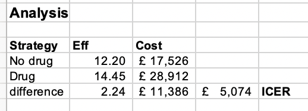

params = list(
t_names = c("without_drug", "with_drug"), # Treatment names
n_treatments =2, # Number of treatments
s_names = c("Asympt", "Progressive", "DeadCause","Dead"), # State names
n_states = 4, # Number of states
a_names = c("accProgressive"),
tunnel_names = c("trProgressive","trDeadCause"),
n_cohort =1000, # Cohort size
cycle = 1, # Cycle length
Initial_age = 55, # Cohort starting age
effect = 0.5, # Treatment Effect (drug)
cAsymp =500, # Cost of asympomatic state
cDeath =1000, # cost of death (progressive disease state only)
cDrug =1000, # Cost of drug
cProg =3000, # Cycle cost of progressive disease
uAsymp =0.95, # Asymptomatic state utility
uProg =0.75, # Progressive disease state utility
oDr = 0, #0.06, # Discount rate (QALYs)
cDr = 0, #0.06, # Discount rate (costs)
tpDcm =0.15, # Death from progressive disease trans prob
tpProg =0.01, # Transition prob: progressive disease
tpDn =0.0379 # Background mortality transition prob
)
params <- modifyList(params,list( n_cycles = 46/params$cycle))Basic Markov Modeling in R
Replication of Green et al (2023) Results
Introduction
The objective of this posting is to provide R code that replicates the model and results in Green et al. (2023).
Green et al. (2023) provide a link to the Excel file as well as code to execute the same model in R. The R code is written in base R, meaning that it does not require any loaded packages to execute. However, the model structure is somewhat complicated–requiring, for example, both state occupancy and transitions out of certain states to be tracked.
More specifically, in the Green et al. (2023) model there is an additional cost from transitioning from Progressive disease to death, but this cost does not apply if the cause of death was background mortality. This is straighforward to track when the calculations are done cycle-by-cycle, as in the original Excel file and R code. However, this type of dynamic is not easily captured in a generalized approach to modeling—as we aim to build here—unless the specific health states are separately defined in the model. Our adaptation to the code generalizes the modeling process but does not change the results.
The code provided below replicates the original model, but draws on various capabilities within the (now ubiquitous) tidyverse universe to both simplify and generalize the execution process; this will become useful in the workshop when we augment the model with additional health states, new evidence, etc.
The original model is structured as follows:

Created on Sketchviz
In this model, individuals can cycle into the death state in one of two ways:
- From the Asymptomatic state, in which case the probability of death is goverened by age-dependent mortality probabilities.
- From the Progressive Disease state, in which case the probability of death is govered both by age-dependent mortality, as well as a heightened probability of death from the disease.
To simplify and generalize the code required to execute the model we will make a slight adaptation to the model structure and seaprate out death from Progressive disease and death from background causes. The adapted model diagram is provided below.

Hosted on Sketchviz
The only other adaptation to the model we will make is to set the discount rates to 0.
Parameterize
Our next objective is to define a function that constructs the time-dependent transition probability matrices.
mPt <- function(t, params) {
lapply(t, function(tt){
current_age <- params$Initial_age + (tt)*params$cycle - 1
tpDn_lookup <-
c("(34,44]" = 0.0017,
"(44,54]" = 0.0044,
"(54,64]" = 0.0138,
"(64,74]" = 0.0379,
"(74,84]" = 0.0912,
"(84,100]" = 0.1958)
age_grp <- cut(current_age,
breaks = c(34,44,54,64,74,84,100))
tpDn <- tpDn_lookup[age_grp]
tpProg_ <- params$tpProg * (tt * params$cycle )
tpDcm_ <- params$tpDcm
rDn <- -log(1 - tpDn)
rProg_ <- -log(1 - tpProg_)
rDcm_ <- -log(1 - tpDcm_)
tpDn <- 1 - exp(-rDn * params$cycle)
tpProg_ <- 1 - exp(-rProg_ * params$cycle)
tpDcm_ <- 1 - exp(-rDcm_ * params$cycle)
effect_ <- params$effect
n_states_ <- params$n_states
s_names_ <- params$s_names
t_names_ <- params$t_names
n_treatments_ <- params$n_treatments
mP_ <-
array(data = c(0, 0, 0,0,
tpProg_, 0, 0,0,
0,tpDcm_,0,0,
tpDn , tpDn, 0,0,
0, 0, 0,0,
tpProg_*(1-effect_), 0, 0,0,
0,tpDcm_,0,0,
tpDn, tpDn,0, 0),
dim = c(n_states_, n_states_, n_treatments_),
dimnames = list(from = s_names_,
to = s_names_,
t_names_))
diag(mP_[,,1]) <- # Diagonal of transition probability matrix is 1 minus off-diagonal sum
1 - rowSums(mP_[,,1])
diag(mP_[,,2]) <-
1 - rowSums(mP_[,,2])
mP <- # This turns the named array into a simpler list object
apply(mP_,3,function(x) x, simplify = FALSE)
return(mP)
})
}Cohort Simulation Function
We next define a function that takes as its input the parameters.
sim_cohort <- function(params) {
1 mP <- mPt(1:(params$n_cycles-1),params)
2 tr <-
mP %>% transpose() %>%
map(~({
tr_ <- t(c("Asymptomatic_disease" = params$n_cohort, "Progressive_disease" = 0, "DeadCause" = 0, "Dead" = 0))
do.call(rbind,lapply(.x, function(tp) {
tr_ <<- tr_ %*% tp
}))
}))
tr <-
tr %>%
map(~({
.x <- rbind(t(c(params$n_cohort,0,0,0)),.x)
}))
3 arr <-
mP %>% transpose() %>%
map(~({
tr_ <- t(c("Asymptomatic_disease" = params$n_cohort, "Progressive_disease" = 0, "DeadCause" = 0, "Dead" = 0))
arr_ <- diag(as.vector(tr_))
do.call(rbind,lapply(.x, function(tp) {
tr_ <<- tr_ %*% tp
arr_ <<- diag(as.vector(tr_)) %*% tp
arr_
}))
}))
arr <-
arr %>%
map(~({
.x <- rbind(diag(c(params$n_cohort,0,0,0)),.x)
}))
arr <- arr %>% map(~({
.x %>% data.frame() %>%
mutate(cycle = sort(rep(1:params$n_cycles,params$n_states))) %>%
group_by(cycle) %>%
nest()
}))
return(list(trace = tr, array = arr))
}
4markov_result <-
sim_cohort(params)- 1
- Calculate the transition probability matrices.
- 2
- Construct the Markov trace
- 3
- Construct a multidimensional transition array (see Krijkamp et al. (2020) for more). The transition array result isn’t used in this particular example, but can provide useful information on transition dynamics for each cycle.
- 4
- Execute the function to simulate the cohort for the given parameters.
lapply(markov_result$trace , function(x) round(x,3))$without_drug
Asympt Progressive DeadCause Dead
[1,] 1000.000 0.000 0.000 0.000
[2,] 976.200 10.000 0.000 13.800
[3,] 943.204 27.886 1.500 27.410
[4,] 901.892 51.614 5.683 40.811
[5,] 853.370 79.236 13.425 53.969
[6,] 798.925 108.925 25.310 66.839
[7,] 739.965 139.019 41.649 79.367
[8,] 677.956 168.045 62.502 91.497
[9,] 614.363 194.756 87.709 103.172
[10,] 550.592 218.147 116.922 114.338
[11,] 487.935 237.474 149.644 124.947
[12,] 415.769 246.526 185.265 152.440
[13,] 350.119 250.096 222.244 177.541
[14,] 291.334 248.618 259.759 200.289
[15,] 239.506 242.690 297.051 220.753
[16,] 194.503 233.014 333.455 239.028
[17,] 156.011 220.351 368.407 255.231
[18,] 123.576 205.469 401.460 269.495
[19,] 96.649 189.105 432.280 281.966
[20,] 74.623 171.936 460.646 292.796
[21,] 56.870 154.553 486.436 302.141
[22,] 39.741 129.218 509.619 321.422
[23,] 27.373 106.793 529.002 336.831
[24,] 18.581 87.331 545.021 349.067
[25,] 12.427 70.726 558.120 358.727
[26,] 8.187 56.774 568.729 366.310
[27,] 5.312 45.208 577.245 372.234
[28,] 3.393 35.738 584.027 376.842
[29,] 2.134 28.068 589.387 380.411
[30,] 1.320 21.917 593.598 383.165
[31,] 0.804 17.027 596.885 385.284
[32,] 0.397 11.388 599.439 388.776
[33,] 0.192 7.577 601.147 391.083
[34,] 0.091 5.020 602.284 392.604
[35,] 0.042 3.315 603.037 393.605
[36,] 0.019 2.184 603.534 394.263
[37,] 0.009 1.436 603.862 394.694
[38,] 0.004 0.942 604.077 394.977
[39,] 0.002 0.618 604.219 395.162
[40,] 0.001 0.405 604.311 395.283
[41,] 0.000 0.265 604.372 395.363
[42,] 0.000 0.174 604.412 395.415
[43,] 0.000 0.114 604.438 395.449
[44,] 0.000 0.074 604.455 395.471
[45,] 0.000 0.049 604.466 395.485
[46,] 0.000 0.032 604.473 395.495
$with_drug
Asympt Progressive DeadCause Dead
[1,] 1000.000 0.000 0.000 0.000
[2,] 981.200 5.000 0.000 13.800
[3,] 957.847 13.993 0.750 27.410
[4,] 930.261 26.069 2.849 40.821
[5,] 898.819 40.404 6.759 54.018
[6,] 863.944 56.256 12.820 66.980
[7,] 826.104 72.960 21.258 79.678
[8,] 785.790 89.923 32.202 92.085
[9,] 743.514 106.625 45.691 104.170
[10,] 699.796 122.618 61.684 115.902
[11,] 655.149 137.523 80.077 127.251
[12,] 594.285 147.715 100.705 157.294
[13,] 536.105 155.617 122.863 185.416
[14,] 480.940 161.223 146.205 211.632
[15,] 429.046 164.595 170.389 235.970
[16,] 380.607 165.846 195.078 258.469
[17,] 335.733 165.132 219.955 279.179
[18,] 294.472 162.641 244.725 298.162
[19,] 256.809 158.583 269.121 315.487
[20,] 222.679 153.182 292.908 331.230
[21,] 191.972 146.667 315.886 345.475
[22,] 154.307 131.448 337.886 376.359
[23,] 123.260 116.717 357.603 402.420
[24,] 97.844 102.739 375.111 424.306
[25,] 77.179 89.700 390.522 442.599
[26,] 60.493 77.712 403.977 457.818
[27,] 47.112 66.832 415.633 470.423
[28,] 36.455 57.072 425.658 480.814
[29,] 28.027 48.410 434.219 489.344
[30,] 21.407 40.797 441.480 496.315
[31,] 16.244 34.168 447.600 501.988
[32,] 10.545 24.871 452.725 511.859
[33,] 6.793 17.958 456.456 518.793
[34,] 4.342 12.869 459.150 523.639
[35,] 2.754 9.157 461.080 527.009
[36,] 1.733 6.472 462.453 529.342
[37,] 1.082 4.546 463.424 530.948
[38,] 0.670 3.174 464.106 532.050
[39,] 0.411 2.204 464.582 532.803
[40,] 0.251 1.522 464.913 533.315
[41,] 0.151 1.046 465.141 533.662
[42,] 0.091 0.715 465.298 533.896
[43,] 0.054 0.487 465.405 534.054
[44,] 0.032 0.330 465.478 534.160
[45,] 0.019 0.223 465.528 534.231
[46,] 0.011 0.150 465.561 534.278Define Payoffs
u_payoff <- with(params,{
array(c("Asymptomatic_disease" = uAsymp, "Progressive_disease" = uProg, "DeadCause" = 0, "Dead" = 0,
"Asymptomatic_disease" = uAsymp, "Progressive_disease" = uProg, "DeadCause" = 0, "Dead" = 0 ),
dim = c(1, n_states, n_treatments),
dimnames = list(from = "qaly",
to = c(s_names),
t_names))
}) %>%
apply(.,3,function(x) t(x), simplify = FALSE)
u_payoff$without_drug
from
to qaly
Asympt 0.95
Progressive 0.75
DeadCause 0.00
Dead 0.00
$with_drug
from
to qaly
Asympt 0.95
Progressive 0.75
DeadCause 0.00
Dead 0.00c_state_payoff <- with(params,{
array(c("Asymptomatic_disease" = cAsymp, "Progressive_disease" = cProg, "DeadCause" = 0 , "Dead" = 0,
"Asymptomatic_disease" = cAsymp+cDrug, "Progressive_disease" = cProg, "DeadCause" = 0 , "Dead" = 0 ),
dim = c(1, n_states, n_treatments),
dimnames = list(from = "cost",
to = c(s_names),
t_names))
}) %>%
apply(.,3,function(x) t(x), simplify = FALSE)
c_state_payoff$without_drug
from
to cost
Asympt 500
Progressive 3000
DeadCause 0
Dead 0
$with_drug
from
to cost
Asympt 1500
Progressive 3000
DeadCause 0
Dead 0c_transition_payoff <- with(params,{
array(c("Asymptomatic_disease" = 0, "Progressive_disease" = 0, "DeadCause" = cDeath , "Dead" = 0,
"Asymptomatic_disease" = 0, "Progressive_disease" = 0, "DeadCause" = cDeath , "Dead" = 0 ),
dim = c(1, n_states, n_treatments),
dimnames = list(from = "transition_cost",
to = c(s_names),
t_names))
}) %>%
apply(.,3,function(x) t(x), simplify = FALSE)
c_transition_payoff$without_drug
from
to transition_cost
Asympt 0
Progressive 0
DeadCause 1000
Dead 0
$with_drug
from
to transition_cost
Asympt 0
Progressive 0
DeadCause 1000
Dead 0qaly_unadj <- # .x[-1,] because we don't count the cycle with the full cohort in asymptomatic
map2(markov_result$trace, u_payoff, ~ ({
.x[-1,] %*% .y
})) %>%
set_names(params$t_names)
cost_state_unadj <-
map2(markov_result$trace, c_state_payoff, ~({
.x[-1,] %*% .y
})) %>%
set_names(params$t_names)
cost_transition_unadj <-
map2(markov_result$trace, c_state_payoff, ~({
matrix(c(0,diff(.x[-1,"DeadCause"]))) * params$cDeath
})) %>%
set_names(params$t_names)
cost_unadj <- map2(cost_state_unadj, cost_transition_unadj, ~(.x + .y))Summarize
Discounting
discounting_cost <-
1/(1+params$cDr)^(0:(params$n_cycles-2))
discounting_outcome <-
1/(1+params$oDr)^(0:(params$n_cycles-2))Total Cost and QALY Calculation (No Cycle Adjustment)
tot_cost <-
map(cost_unadj, ~(sum(.x * discounting_cost )/params$n_cohort)) %>%
set_names(params$t_names)
tot_qaly <-
map(qaly_unadj, ~(sum(.x * discounting_outcome )/params$n_cohort)) %>%
set_names(params$t_names)
diff_cost <-
tot_cost$with_drug - tot_cost$without_drug
diff_qaly <-
tot_qaly$with_drug - tot_qaly$without_drug
cbind.data.frame(cbind(tot_qaly),cbind(tot_cost)) %>%
set_names(c("Eff","Cost")) %>%
data.frame() %>%
rbind.data.frame("difference" = data.frame(Eff = round(diff_qaly,2), Cost = round(diff_cost,0))) %>%
mutate(ICER = c("","",paste0(round(diff_cost / diff_qaly,0)))) %>%
kable(digits = c(0,0,0)) %>%
kable_styling()| Eff | Cost | ICER | |
|---|---|---|---|
| without_drug | 12.203 | 17526 | |
| with_drug | 14.446 | 28912 | |
| difference | 2.24 | 11386 | 5074 |

Total Cost and QALY Calculation (With Cycle Adjustment)
1alt_simp_coef <- function(i) c(17, 59, 43, 49, rep(48, i-8), 49, 43, 59, 17) / 48
cycle_adj <- alt_simp_coef(params$n_cycles-1)- 1
- Alternative Simpson’s method coefficients
tot_cost_cadj <-
map(cost_unadj, ~(sum(.x * discounting_cost * cycle_adj )/params$n_cohort)) %>%
set_names(params$t_names)
tot_qaly_cadj <-
map(qaly_unadj, ~(sum(.x * discounting_outcome * cycle_adj )/params$n_cohort)) %>%
set_names(params$t_names)
diff_cost_cadj <-
tot_cost_cadj$with_drug - tot_cost_cadj$without_drug
diff_qaly_cadj <-
tot_qaly_cadj$with_drug - tot_qaly_cadj$without_drug
cbind.data.frame(cbind(tot_qaly_cadj),cbind(tot_cost_cadj)) %>%
set_names(c("Eff","Cost")) %>%
data.frame() %>%
rbind.data.frame("difference" = data.frame(Eff = round(diff_qaly_cadj,2), Cost = round(diff_cost_cadj,0))) %>%
mutate(ICER = c("","",paste0(round(diff_cost / diff_qaly,0)))) %>%
kable(digits = c(0,0,0)) %>%
kable_styling()| Eff | Cost | ICER | |
|---|---|---|---|
| without_drug | 11.734 | 17269 | |
| with_drug | 13.977 | 28167 | |
| difference | 2.24 | 10898 | 5074 |
References
Green, Nathan, Felicity Lamrock, Nichola Naylor, Jack Williams, and Andrew Briggs. 2023. “Health Economic Evaluation Using Markov Models in r for Microsoft Excel Users: A Tutorial.” PharmacoEconomics 41 (1): 5–19.
Krijkamp, Eline M, Fernando Alarid-Escudero, Eva A Enns, Petros Pechlivanoglou, MG Myriam Hunink, Alan Yang, and Hawre J Jalal. 2020. “A Multidimensional Array Representation of State-Transition Model Dynamics.” Medical Decision Making 40 (2): 242–48.